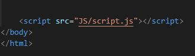
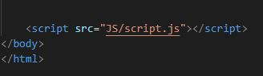

1) ¿Qué versiones de JavaScript hay en el mercado?
versiones de JavaScript en el mercado:
- 1997: ES1
- 1998: ES2
- 1999: ES3
- 2009: ES5
- 2011: ES5.1
- 2015: ES6
- 2016: ES7
- 2017: ES8
- 2018: ES9
- 2019: ES10
- 2020: ES11
- 2021: ES12
2) ¿Cómo se integra JavaScript a HTML?
Existen dos formas de integrar JS a HTML:
Forma 1: vinculando el html con el archivo JS
 

Desde el body
Desde el head
Forma 2: insertando contenido de JS dentro del html


Desde el body
Desde el head